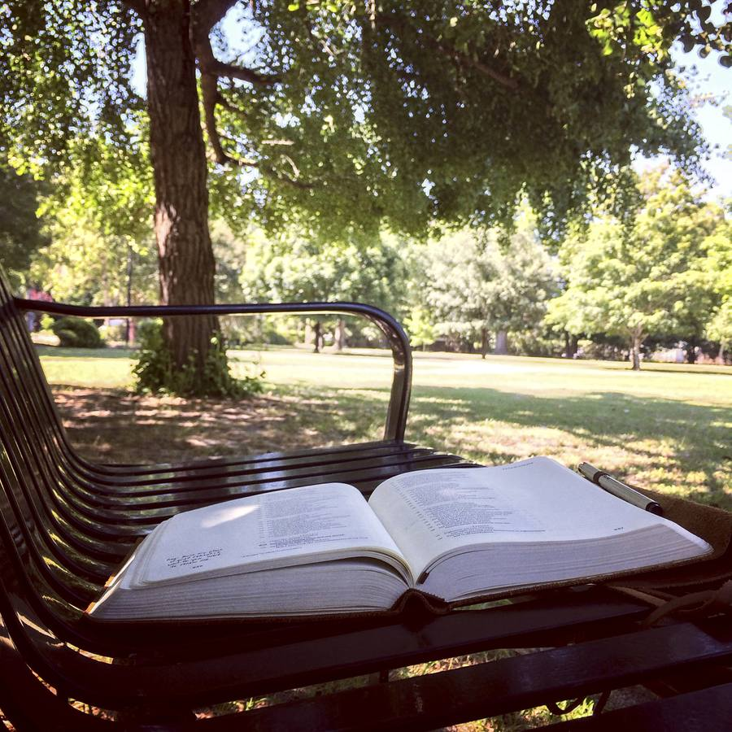

Die Bibel ist unser verbindlicher Maßstab für Lehre und Leben. In dieser Glaubensgrundlage legen wir nieder, wie wir das Wort Gottes in seinen Hauptlehren verstehen. Wir bekennen die göttliche Inspiration und die Unfehlbarkeit der ganzen Heiligen Schrift (im Urtext) ihre höchste Autorität für alle Fragen des Glaubens und des Lebens. Die Bibel ist vollständig, weitere göttliche Offenbarungen außerhalb der Schrift sind nicht inspiriert.
Wer wir sind & was wir glauben
Vorab: Wir sind keine Sekte, keine Zeugen Jehovas, keine Mormonen...
Warum heißen wir „Freie Bibelgemeinde“?
- Frei
- Wir verstehen uns als eine freikirchliche Einrichtung, das heißt keinem Gemeindeverband zugehörig. Wir sind unabhängig vom Staat und erheben keine Kirchensteuern und finanzieren unsere Gemeinde durch freiwillige Spendenbeiträge der Mitglieder und Freunde. Als eingetragener Verein (e.V.) anerkannt, stützt sich die Mitgliedschaft auf der persönlichen und freiwilligen Entscheidung jedes Einzelnen zum Glauben, zur Gemeinde und zur Mitarbeit.
- Bibel
- Die Bibel ist ein verbindlicher Maßstab für unsere Gottesdienste und das persönliche Leben. Wir glauben daran, dass jedes Wort von Gott eingegeben, unfehlbar und die höchste Autorität in allen Fragen des Glaubens und des Lebens ist.
- Gemeinde
- Wir nennen uns eine „Gemeinde“, weil wir die Gemeinschaft mit anderen Christen und die gegenseitige Ermutigung, im Glauben an Jesus Christus stetig zu wachsen, als bereichernd und für unabkömmlich halten. Kinder, Jugendliche, Singles, Familien und Senioren begleiten einander in verschiedenen Veranstaltungen und können lebenslange Freundschaften schließen. In einer Gemeinde soll niemand einsam sein!

Unsere Glaubensgrundlage
BIBEL
TRINITÄT
Wir bekennen die Einheit Gottes des Vaters, des Sohnes und des Heiligen Geistes.
SÜNDHAFTIGKEIT DES MENSCHEN
Wir bekennen die völlige Sündhaftigkeit der menschlichen Natur seit dem Sündenfall - und damit das ewige Verlorensein jedes Menschen, der nicht durch Jesus Christus erlöst ist.
ERLÖSUNG
Wir bekennen die Erlösung von der Sünde allein durch den Opfertod Jesu Christi, der als der fleischgewordene Sohn Gottes unser Stellvertreter geworden ist und sein Blut für uns vergossen hat und zwar erfahren wir hier auf Erden die Erlösung von der Schuld, Strafe und Macht der Sünde und nach dem Tode die Erlösung von der Gegenwart der Sünde.
AUFERSTEHUNG
Wir bekennen die leibhaftige Auferstehung Jesu Christi von den Toten und seine Erhöhung zur Rechten Gottes.
WIEDERGEBURT
Wir bekennen, dass man geistlich wiedergeboren sein muss, um errettet zu sein. Diese Wiedergeburt wirkt der Heilige Geist, indem der Heilige Geist dem Menschen ein neues Herz und ewiges Leben in Jesus Christus gibt.
HEILIGER GEIST
Wir bekennen die Innewohnung des Heiligen Geistes in jedem Gläubigen und die Erfüllung mit dem Heiligen Geist auf Grund vollständiger Hingabe und Glauben an die Verheißung Gottes. Unmittelbar nach der Wiedergeburt wird jeder Gläubige mit dem Heiligen Geist versiegelt.
ENDZEIT
Wir bekennen die lebendige Hoffnung der persönlichen, jederzeit bevorstehenden Erscheinung des Herrn Jesu Christi zur Entrückung Seiner Gemeinde und danach die Wiederkunft Jesu Christi mit seinen Auserwählten zur Aufrichtung des Tausendjährigen Königreichs auf dieser Erde. Wir bekennen die Erwartung eines neuen Himmels und einer neuen Erde und des ewigen Reiches Gottes.